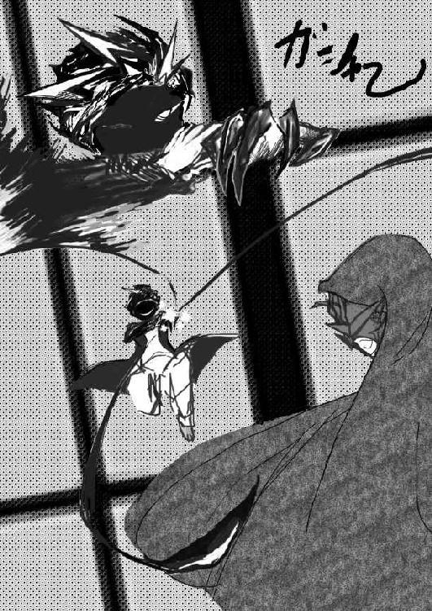

| 隻ヶ淵ゴクトのダーティアンドパーティⅡ | |
| 血能集団ロンパイア | |
| (2017) | |
誰もが羨む宝物、そんな夢の詰まった宝物庫があるとしたらきっと、
こういった場所の事を指すんだと、いざこうして辿り着いたからこそ強く思う。
今すぐにでも倒れてしまいそうな、この弱々しい体を、
半ば引きずってここまで来たアタシにとってすれば、尚更――
「――生き、たいな」
「死にたくないよう......」
意識せずに自分の口から出てしまった、か細い呪詛をグッと飲み込む。
そしてアタシは、自分の胸にそっと手を置いた。
痛みきって縮んでもなお、厚さを保つパーカーの布地の上に。
自分の日常だったモノの残骸に、今はこうも平静を憶えてしまう――うん、大丈夫。
――ここで生きてるんだもん。
――これからだって生きられるよね。
だって、アタシはまだこんなにも感じ取れる。
開かれた自動ドアの向こうから漂ってくる、濃密なまでの紙とインクのニオイ。
全国でも指折りの図書館の名は伊達ではないのだ。といった誇示をしてやまない、そのえもしれぬ迫力に、アタシはもうタジタジなんだから。
具体的に挙げ連ねるなら、そうね――
足がガタガタすくんでるし。
肌がビリビリ震えてもいる。
深呼吸だけでお腹が膨れそうになってる。何事にも過敏なお年頃で参っちゃうな。なんて――
自分でも大げさに聞こえるけど、
自己の状態を改めて省みると、あながち間違いじゃないから困りモノだ。
なんたって昨日から冷や汗と目眩が治まらないに加えて、さっきの状態異常だ。
その合併症による幻覚という可能性も、そろそろ否定しきれないのが辛いところ。
――うん、大丈夫。
――あと少しだけ、多分きっと、頑張れるから。
むん、とアタシは胸の前で小さくガッツポーズを作って、
目と鼻の先の公共図書館に、我が宝物庫に足を踏み入れたのだった――
入って早々に朝の挨拶を告げてくれた受付を早足で横切って、
館内の奥を意識して足を動かす。目星の本があるのはもっと先だと思うから。
本棚の前を通る際になぞる背表紙の手触りが心地いい。
孤児院にいた頃は、よくこうして鍵盤をなぞって遊んだっけ。
いや、今はやめよう。
あまり変な人に見られちゃうのはヤダもん。
本が選びにくくなっちゃうからな、アタシよ。反省。さあ仕切りなおしだ。
一つ本棚に前に立つ。
一冊一冊、本の上辺に指を這わせていくけれど、手に取るに相応しい品はない。
ダメなら次の棚でも同じ手順を、また同じ手順をと繰り返す。そうしてる内にようやく目ぼしい一品を手にすることに成功した。
その一冊を天に掲げて思わずポージング。
大きくて分厚くてなんかザラザラする表紙がどこか愛おしいソレを、
アタシは人目も気にせずギュッと抱きしめて「もう離さないよ」とまで告げてしまった。
まるで前世で生き別れた相手と再会したかのような喜びように、
我ながらドン引きである。そんなバカをしていてはじめて気付いた。
いや、気が抜けた今だからこそ気付けたのかもしれない――自分の身に迫る、その危機に。
入り口に戻る為にアタシが棚を横切ると、探し終えた棚の影に立つ誰かが蠢く。
それも一度や二度じゃない。同じ人が何度も何度も、確実にアタシの後をつけてきていた。
――なんで。
――どうしてアタシを。
分からない。
心当たりは少しあるけど、アタシも後には引けないの。
なけなしの生唾を飲み込んで意を決したアタシは、
本棚から身を乗り出すフリをして、誘い出された相手に向かって先制攻撃をしかける。
弾数は無限大――
手元にある本を掴んでは投げ掴んでは投げの乱舞だ。
追跡者もこれには参ったのか、女性の声で「やめて」とか、
しきりに「いたい」などと供述中。でも、やめてなんかやらない。こっちは命がかかってるの――！
てんやわんやしてる内に追跡者が盛大な音を出して尻餅をつく。しめた――
踵を返してすぐさまダッシュ。息なんて駆け出してすぐに切れてしまう。でも、未だに天はアタシを見捨ててはない。
さっきの騒ぎを聞きつけて群がってきたなんだなんだと群がってきた野次馬。
即興の煙幕としては最高に効果的だ。体力なんてもうあってないようなモノだけど、あと少しだから。
開かれた自動ドアというゴールテープを切る。
すぐに膝に手を置いた。だけど、結果オーライだよ。
これできっと、アタシは生きていられる。えへへ――そう浮かれきっていた、その時だった。
アタシの肩に、
死神の手が置かれてしまったのは。
「っ――」
嘘だ。こんなのってないよね。
だって、アタシはやり遂げたんだから。
きっと係員の人だよ。さっきの乱闘騒ぎに文句を言いにきたんだ。
そう思っていた。ううん、
そう思っていたかっただけだった。
そんなアタシの気持ちに呼応するように、手の持ち主は口を開く。
「警備の者です。分かってるよね、キミ」
「じゃあ、事務所まで行くから着いてきて」
手首をがっしりと掴まれる。
皮の手袋を嵌めたその手から伝わる冷気に、
ゾワリとした寒気が背筋をくすぐった。歯の奥がカチカチと揺れ始める。嘘だよ、どうして――
――どうしてバレたの。
――アタシが"万引き"をしようとした事が。
なんで、なんで、おかしいよ。
イヤだ。アタシはこれからどうなるんだろう。
警察、うそ。裁判とか。いやだ。怖いよ。なんで、どうして――
錯綜する思考の中で身を揺する、一本の輝かしい糸口があった。
アタシは迷わずにソレを掴んで、気付いてしまう――あれ、でも待てよ。そう口にしながら。
自分の状態を省みて、改めて納得した。
そうだよ、さっきの女の人に本を投げてしまっていたのだと。
悔しいけど、アタシはいま手ぶらじゃないか。そうなれば、次の疑問は当然こうなる。
――実際には成立していなかった万引きを、
――どうしてこの人は、万引きと見なす事が出来たのか。
アタシは尋ねた――
尋ねる他になかった。そして、いざ返ってきた音に背筋が凍る。
ニンマリと嗤うような、
まるで深淵が間口をひらく様なその音に。そして理解させられたんだ。
アタシの手をとったその相手は、比喩でもなんでもない、本物の死神だったのだと――
「みすぼらしい格好と慢性的に栄養を欠いた挙動から見て」
「低水準の生活環境に身を置いている人間である事は明らかだった」
――――
「補強材料になったのは、キミの本の選別基準」
「本の大きさと価値の大きさは比例する事が多いからネ」
「図書館の奥に追いやられがちな大判の本に的を絞っているのは、
換金目当てであると考えるのが普通だ、キミのような文庫や漫画の似合う女子となればなおさら」
おかしい。
いやまだおかしいよ。そんなの――
それならただ本を借りに来ただけの可能性だってある！ アタシが捕まる云われなんて――
そう言うと死神は高らかに笑い出した。
狂ったように、心底おかしな対象を嘲笑うかのように。
と思えば、笑い声をピタリと止めて冷淡な口ぶりで告げてきた。アタシの命を掻く死の宣告を――
「ソレは有り得ないな」
「この図書館の本をキミのような疾患をもった人物には読み取れない」
「借りる意義があるなら、こちらが教えてほしいくらいさ。漬物石にでもするのかな」
――――
「それにしても世も末だネ」
「盗みに最も不利なハンデをもったキミが、盗みを働く必要があるなんて」
――――
「実に嘆かわしいハナシさ」
「親にも見捨てられて、世話をしてくれる相手なんていない」
「学校も行けない。食べ物一つ満足に口にできない。女の子らしいことなんて何一つできやしない」
――――
「改めて言われなくたって分かるよね」
「キミ自身が忘れかけていたキミが、オイラにそう告げてきたように」
アタシがここに至るまで築いてきた全てを舐り取るような、
そんな死神の言葉に身震いを起こす。それと同時に思い知ってしまった。
全て暴かれてしまっていたのだ、と。この死神には、どんな嘘も通じないのだと――
頭はうつむいて腕がダラリと下がった。
五感がぼんやりとして、掴まれた手首の感覚だけが、
アタシの事を、今この出来事が、現実である事を伝えてくれている。
夢ならどんなに良かっただろう。本当にそう思う。
だけど――同時に納得もしてしまう自分がいる事も確かだ。
みんなのお家だった孤児院が焼けただれて、
ソコで拾ってくれたお父さんすら、いつの間にかいなくなって、
その結末がコレなんだ――当たり前だよね。こんなアタシなんかが人並に生きてちゃ、やっぱりいけないよ。
だから、罰は受けなくちゃいけないんだ。
どんなカタチでも。
「さぁ着いたネ」
「扉をどうぞ、マドモワゼル」
マダモア・ジェルってなんだろう。
新手の化粧品かな。まぁいいか、もうどうでも――
手袋に優しく促されてドアノブに手をかける。
そっと押して開いてすぐに――アタシは、拍手喝采で迎えられた。
導かれた室内には人が二人いて、ここに導いた死神すらアタシの隣で、
同様に手を打って祝福してくれている。そして大手を広げながらこう宣言した。
「ようこそ」
「オイラ主催の会食パーティへ――！」
――えっ、なにこれ。
――パーティって、一体なんなの。
ニッポンはいつからか、泥棒を歓迎する悪い国になってしまったのでしょうか。
「くっく――騙してゴメンね。いや騙されたキミも悪いんだヨ」
「現行犯でしか逮捕できない万引きをエサにされて、ここまで着いてくるキミがサ」
死神のそんな言葉にアタシが面食らっていると、
拍手をしてくれていた一人が、足音を響かせてこちらに近付いてくる。
ただ「ゴクトくん」と憤りながら。それはさっき私から本を投げつけられた女の人の声だった。
――えっ、二人は知り合いなの。
――つまり、図書館の警備の人の仲間ってことなの、かな。何もかも分かりかねちゃうんですが。
「いつの間にか図書館から出て、どこかに行ったかと思ったら」
「いきなり電話をかけてきて「先に戻ってて」ってどういう事ですか！」
アタシの隣にいた死神。
いや、ゴクトくんと呼ばれた人が一歩後ずさって。
女の人に「ごめんごめん」としきりに謝っているようで。先程までの恐ろしい空気がまるで感じられない。
「いいから、さっさと座れよオマエら」
「他に客が来たら帰っちまうだろうが――」
渋みを感じさせるぶっきらぼうなその物言いは、
室内の奥に立つ拍手勢の片割れからだ。ソレよりも＜お客さん＞とは何の事だろう――
アタシが今、どこにいるのかまるで読み取れない。
惑ってるうちにアタシは、ゴクトに手を引かれて着席させられてしまう。
するとすぐに、コトンと目の前のカウンターに何かが置かれた。
「シチューだ」
「冷めないうちにさっさと食っちまえ」
シチュー......って、あのシチュー？
ニオイは、確かにそうみたいだけど。
そんなモノを、今どうしてアタシの前に置くのか理解不能だ。
食べろって事、なのかな。
いや、でも自白剤とか盛られてたらどうしよう。
「大丈夫、何も入ってないヨ」
「味だって折り紙付きサ。まぁどれもそれも、あの渋い声をしたおじさんの匙加減だけど」
いつの間にか左隣に座っていたゴクトの一言に、
カウンターの向こうからは「うるせえ」という文句が返ってくる。
すると、右隣からも声がかかった――
「ちょっと分からないんですけど」
「何でその子は、そのような勘違いをしてるのかが」
「まるでこの場所を"留置場"か何かみたいに、思ってるみたいですけど」
「とても良い質問だ。カナエお姉ちゃん」
「ソレはネ。ここに来る途中で、オイラがこう伝えたからだよ「事務所」に行くよって」
さっきの女の人――カナエの言葉に、ゴクトはそう切り返す。
まだ納得のいかないのか、カナエが再び口を開こうとした所で、渋いおじさんの止めが入る。
「ゴクトがさっき電話してきてよ」
「メシと"面広のスプーン"を用意しろなんて意味不明な要求をされた時は、面食らっちまったがいま納得した」
「目ぇ、見えてねぇんだな。そのお嬢ちゃんは」
左で静かにゴクトが空気を切る。ソレは肯首の音だった。
右のカナエが机をいったい思い切り叩く――うるさい。いったい何なのだろう。
「えぇええええ――」
「だってその子、ワタシ目掛けて本を投げまくってきましたよ！ かなり的確に！」
「空間認識能力が高いのサ。オイラも実に先導が楽だったヨ」
「反響を耳で気流を肌で感じ取って、近場の人物や無機物の大ざっぱな立体視が可能なんだろうネ」
「あまりに過ぎた力だ。でも、そんなキミですら"盲目"を誤魔化しきれない場面が多々あったよ――」
――――
「まず、選別の手順が普通とはまるで逆である事」
「本に手を触れる前に、目で本を追うという手順をもたずに、まず指で本をなぞっていた」
「大きさを確かめるためとはいえ、少しだけ無理があったよアレは」
――――
「そして次だ。換金目的の万引きを行うために、図書館に入るというプロセスについて」
「その時点でもう、重大なエラーが生じているのサ。目が見えてる人なら絶対に有り得ない」
「公共施設の品に必ずといっていい程ある"印字"を、キミは見逃した。いいや認識できなかったんだ」
――――
「極めつけは、さっきカナエお姉ちゃんが言った通りさ」
「黒ずくめの格好をしたオイラの誘導に対して、なんの疑問も抱かなかった事」
「この場末の軽喫茶を、オイラが急遽つくりあげた即席のパーティ会場を――取り調べ室か何かと勘違いした事だネ」
思わず感心しました。
どうしてバレていたか、その理由の羅列に――
さっきまで勘ぐっていた死神の不思議パワーでもなんでもない。純粋な推理であった事に――いやいや、ソレはともかくだよ。
今はもっと気にするべきことがあったハズ。
そう＜パーティ＞だ。気にかかって仕方ないそのワードに食いつくべき。
会場とはなんなのか。ゴクトはなんで、そんな場所にアタシをつれてきたのか。そう尋ねてみる。すると――
「そりゃあサプライズの為さ」
「キミに笑ってもらうためなら、何だってするよ」
「なんなら、当面の衣食住をこのオジサンに賄ってもらうのも厭わないね」
分からない。
この人の事がよく分からない。
でも、この場をゴクトが用意した事は本当、だと思うから――
だけど、本当にコレ食べてもいいのかな。
お金なんてないアタシが。食べてもいいのかな。本当に。
「ガキがそんなこと気にすんな」
「会場設営者とやらのソイツらが、払う事になってるよ」
朗らかに笑ったオジサンのそんな意趣返しに、
ゴクトが「そんなぁ」と肩を落とした。ソレがおかしかったのかな。
カナエが上品そうな微笑を洩らした。それにしても――
うぅ、視線が痛い――
ひしひしと注目を集めているのが肌で分かる。
目が見えないからってナメんなよぉ。こちとら分かるんだから。見られてることぐらいっ！
それでもなお、
見つめることをやめない三人の根に負けて、
アタシはスプーンを掴んで、シチューを掬って口に運んだ。
掬って、口に運ぶ。
掬って、口に運んで、飲み込む。
ただそれだけなのに、なんでかな――その度に涙がこぼれるのは。
「ありがとう」
「ごめんなさい。ありがとう――」
こんなありきたりな言葉が、
口から端から何度もこぼてしまう。さながら繰言のように――
お父さんがいなくなってから、
無くしてしまっていた当たり前の事を、取り戻すように、
ずっと一人で溜め込んでいたモノが、とめどなく溢れ出すように。
「ありがとう。ごめんなさい。ありがとう――」
なんでこうなったのか分からなかった。
どうしてお父さんがアタシを放ったままにしているのか。
どうして連絡の一つのくれずに、黙っていなくなったのか。それでも――
分からないまま閉ざそうとしてた自分にも、
まだ先がある事があるのかもしれない。今のアタシはソレがただ嬉しくて――
アタシのそんな姿に喜び、笑い合ってくれたみんなが、まるで一時の夢のように思えて。アタシは、もう一度だけ泣いてしまった。
引き金を弾く度に舞い上がる赤い飛沫の中を舞踏する――
このワタシ、銃士"パステル"の朝は早い。
起床して一番に立つこの射撃場の只中で、
純白の二丁拳銃のみを頼りに幾つもの"作品"を完成に導くのがその役目。
物欲しげにこちらを見つめる標的には少しばかりの憐憫を覚えますけれど、ごめんあそばせ――この銃はナニかを撃つ為の代物ではないの。
次々と量産されていく作品にまずは満足。
ワタシは締めの挨拶に「サヨナラ」を告げて、振り返り際に最後の弾丸を放った。薄く笑おうと歪む口元を必死に抑えながら。
そう、このワタシ"パステル"を除いては、この世の誰も知りえないだろう。
――空間に飾られた無数の絵画たちを。
――ここで催されていた、摩訶不思議な展覧回廊を。
密閉された空間内に弾頭が弾けて一輪の光の花が咲く。それと同時に、
空気と言うキャンパスに固着されていた作品群が、次々とその身を溶かして落下していき、やがては地面に赤い斑模様を作った。
「――――」
「あれ、もしかしてワタシって今すごくカッコイイかも」
子供の頃から仕込まれたカーテシーを、
こうした決めポーズに使うのは少しばかり背徳ですけれど、
なんだかサマになりそうですし。トリックも喜んでくれるかな。えへへ。
ご機嫌のまま今朝の鍛錬を終えたワタシは備え付けのシャワーで汗を流し、
無垢色をしたベストにプリーツスカートを纏います。
頭にはトーク帽を乗せて、仕上げとばかりに無骨なガンベルトを腰回りに巻けばこれにて完成――おっと、肝心なものを忘れてました。
洗濯籠に放り込んでいた二丁の銃を、改めてベルトのポシェットに差し込みます。そうすれば今度こそ、銃士"パステル"の完成です。
試しに身鏡の前でターンとポーズを決めて、女の子としての出来栄えに思わず深く頷きます。この破竹の勢いはまるで留まる事を知らず――
ついには彼の絵まで鏡に描き出しその胸元をバキュンバキュン撃ち抜きます。
ものの見事にワタシのハートを射抜かれたトリックの姿に「うへへへ」という緩みきった笑い声とヨダレが口の端から洩れてしまうのが止められません。
ワタシの中のもう一人の自分が「オマエ完全に舞い上がってるぞ」やら「願掛けにしてもコレはないわ」と他人事のように嘯いてきますが、知ったこっちゃありません。かの名手シモ・ヘイヘにも今のワタシは止められないのです。
ひとしきり恋のキューピットに勤しんで満足したワタシは、
足取り軽やかに、赤い塗料で濡れたくった射撃場とシャワールームを後にしました――
その道中の足取りも実に軽やかなスキップ。
固形栄養食品をかじってお腹を満たしながら、その足でアジトに向かうのです。
まぁいずこへ向かうだなんて大仰なモノでもなく、目的地はは軒先を三つほど隔てた一店舗。数歩すればすぐ目の前に見えるのですけど。それはそうと――
あぁ、この弾むような足取りがどうしてもやめられない。
ワタシが今いる場所は実のところ、輝かしい花畑かどこかなのでしょうか。
どうみても小汚いタダの路地裏ですケド。そんなの、これから大切な人に会いに行く事実を踏まえれば些細な事ですよね！
前回の作戦では真っ先に帰還を命じられたり、
添い寝のお誘いはそっけない態度でスルーされたり、
公私ともに散々あしらわれてきましたが、銃の腕も女も磨いた今のワタシならイロイロと認めてもらえるハズ――ハートを撃ち抜いて願掛けもしましたし！ 今日こそは！
ワタシは一度、＜軽喫茶ボルバルディア＞と筆字体で書かれた、
軒先テントの下で足を止めて深呼吸。一週間前から更新されていない立て看板のオススメメニューであるシチューの文字を一瞥したワタシは、
扉を押し開けながら、好きな相手の名を呼んだ――
「トリックぅ――」
「おはようございます！」
朝一番に響き渡るワタシの挨拶に触発されたのでしょうか、
一番奥のテーブル席でナニかがモゾモゾ。何だろうと目を凝らせば、
ソファの上に転がる影が蠢いていました。少しだけ警戒しながら近づいて、あまりの驚きに打ち震えます。
そう、暗がりの中で一枚の毛布にくるまりながらも、
自己主張をしてやまない黒のロングコートをトレードマークにする彼に――
なんとも、あどけない顔で寝ていらっしゃるではないですか！ あどけない顔で寝ていらっしゃるではないですか！
山間部でもない地方都市で、
それも場末の喫茶店というか室内で、
エコーを響かせた自分の脳内に思わず後ずさったワタシは、気を改めて彼の顔を覗き込んで顔を緩ませます。愛くるしい彼の寝姿に。
子供らしい小ぶりな手はとても肌触りがよく、
その握り拳はどんなモノも取りこぼさない意気込みを思わせます。
こうして手をグー、パーにさせて弄ぶだけで弛まない幸せを感じてしまうから不思議です。
――まだまだ子供。だけど、
――やっぱり男の子なんだね。
互いが互いを引き立てる魅力に見えてしまう。
その度に、ワタシはもうダメかもって実感しちゃうんです。
子供で男の子な彼に、こんなに骨抜きにされちゃってるんだもん。
ふと店内を見回して索敵。
うむ、大丈夫そうですね。今日は営業してないし。
マスターも昼間まで戻らないハズだから――つまり、今ワタシと彼は二人きりっ！
ま、まぁ仲間という立場上ではありますケド。ワタシには彼を起こす義務があるわけで、その方法がワタシに一任されているのであれば、ラブコールやなんなら目覚ましのチューも辞さないというか。むしろ少年期の健やかなる安眠を守るという言い訳も建つことですし、お布団を敷いてこのまま添い寝になんか洒落込むの良かったりなんかしちゃったりしてえへへへへ。
っていけませんいけません！
こんなトロけきった顔をトリックにお見せしたら、
年上としての威厳が――
「おはよぉ、カナエお姉ちゃん」
「なんか面白そうな顔してたね。ふあぁ――」
可愛らしい目が目の前でぱちくり。
――開口一番のセリフを鑑みるに、一部始終を見られていたみたいです。
四つん這いになって猛省。うぅ、ゼンブ見られてたんでしょうか。
自分のほっぺに手を当てたままめくるめく想像に耽る姿とか。暗がりの中で男児にじり寄る姿とか――ってワタシ、完全に変質者かよぉバカか。
「――――」
「あっ」
恥ずかしい思い出を根掘り葉掘りしていた過程で、
一つ重要なファクターを見逃していたことに気付いたワタシは、彼に食ってかかります。その重大な言い違いに――
「ゴクトく――じゃなくてトリック！」
「ワタシの事はこれから"パステル"って呼んでって言いましたよね！」
台無しだ。せっかくワタシが、
朝っぱらからハードボイルディな空気を醸し出していたのに、
ゴクト君の言い間違いのせいで、あっという間にご破算ですよもうっ。
「なんに影響されたか分かんないケドさ」
「ふぁあ、もう少しユルくいこうよ。カナエお姉ちゃん」
そう言いがてら伸びしてあくびをするゴクト君。
中綿の飛び出たソファの上で、背中を丸めて転がる姿はさながらネコだ。
カワイイ。街で見かけたら即買いですね――ワタシがそんな油断をしているところに「そもそもハードボイルドな人は、さっきのような行動に出ない」といった、
鋭い正論を刺してくる姿もまたゴクト君らしい。悔しいけどそんなところも好きとしか思えないワタシはもう口を噤むしかない。何よりも――的を得た発言がもう一つあったとすれば尚更です。
そうなんです――
コードネームという影響は確かに、昨日の夜に見たスパイ映画からきたものでしたから。だけどソレは、
あらかじめあって温めてきた着想を形にするための、
いわば部品であった事は、どうしても理解してほしいんです。その着想がワタシのゴクト君への気持ちあってのモノであった事も――
だって、名前をもじったあだ名はもう、
いつの間にかクラスメートに取られてて――ワタシは、ゴクト君と二人だけで共有できる事が欲しいんです！
「間に合ってると思うけどネ」
「実質、二人っきりのチームじゃないか」
まぁ確かにあの事件を機に、
ゴクト君はワタシをサプライズのメンバーとして迎え入れてくれましたケド。
学校の事で両親とケンカして、家を出てしまったワタシの受け皿に、この隠れ家を提供してくれた事もありがたく思います。だけど――
――そうだけどそうじゃないんです！
――それとこれは話が別なんです！
――乙女ゴコロは複雑なんです！
「それにですっチームという枠組みを講じてる割には」
「いざサプライズをはじめたワタシをゴクト君は蔑ろにしすぎです！」
「これじゃ公私ともに欲求不満ですよぉ......こんなんじゃそのうちストライキを起こしますからっ！」
そんなワタシのとめどない抗議には目もくれず、
起こした体をカウンター席にかけたゴクト君は、テレビをつけて鑑賞を始めます――うぅぅ、もうっ！
そっけない彼の姿に悶々としながらも、
電気をつけてあげたり、朝ごはんを作ってソレを食べさせてあげていたり、気付いたら彼の身の回りを整えている自分がいて――
ソレは仲間としてでも女の子としてでもない。なんかよく分からない奉仕精神である事にまで気付いて。そんな第三勢力が芽生えてる自覚を必死で追い払います。いいやだけど、
これってなんだか家族みたいでいいんじゃないでしょうか。
お姉ちゃんみたい――とかなんとか思っちゃったり、なんだかんだ少し嬉し――いやいやいやっワタシは今怒ってるんです！
プンスカプンです！
そう簡単には許してなんかあげませんから――
「お姉ちゃん」
「ソレ、頑張ってるみたいだね」
掃除機で床掃除に勤しんでいたワタシのベルトをゴクト君が指差します。
正確には、差さった得物の方でしょうか。それと同時に怪訝にも思います。どうして彼がワタシの頑張りを知っているのか。
その答えは、ワタシの腰周りで輝きを帯びる二丁の銃にありました。
原色銃――銃の腹についたバレルには、
十円大の部品を差し込める穴がいくつか存在して、ソコに色素の入ったカートリッジを差し込む事で、色素の射出が可能になる仕様だ。
プリンターの三原色と同じ原理で、あらゆる色を射出できる特性を持つ反面、
突き刺さったカートリッジの色素残量に、常に気を配らないといけないピーキーな銃でもある。
ゴクト君は銃からむき出しになった三本のうち、
赤色のカートリッジが特に減っていた事に注目してくれたのでしょう。
そう考えただけで、たちまちご機嫌になったワタシは自分でも単純だと思う。でも、
ゴクトくんがワタシを見ていてくれた。という事実だけで、
ワタシの頭はわぁーキャーのお祭り状態。認めてくれた。労ってくれた。
そうですもんね。ゴクトくんにはカナエお姉ちゃんが着いてなくちゃダメですもんね。たくさんリードしてあげなくちゃ！
気をよくして思考の脱線し始めたワタシは掃除機もついでに放り投げて、
足早にゴクト君の隣に擦り寄ります。そして一度だけ咳払いをして宣言しました。これから取り仕切るサプライズの序章を――
「では――」
「あの子の笑顔を取り戻すための作戦会議としゃれこみましょう」
昨日の図書館でのいざこざを経て、
ワタシたちに歳相応の自己紹介を見せてくれたマリアンちゃんは、
充分な食事を摂った後、半ば気を失うように机に突っ伏してしまいました。
やっぱりマスターが薬を盛っていたと、
そう冗談めいて笑うゴクト君の横でスヤスヤと眠る彼女の状況は、
極度の緊張と、過労からくる一時的なモノだったようでとりあえずは安心。今はアジト二階にある寝室を借りて、ベッドで横になっています。
「となると――」
「まずは失踪した父親の居場所をつきとめる必要があるネ」
笑顔という言葉を聞いてスイッチが入ったのでしょうか、
ワタシの発言に追従するカタチで、ゴクト君が言葉を挟みました――そうですね。
学園で有った事、ゴクト君がワタシにしてくれた事を踏まえるなら、
彼女の心にあるわだかまりをゼンブ取り除いてあげるカタチが、最良であるとワタシも考えます。ですが――
当時、火の海と化していた孤児院の中で、
視力を失って逃げる事すらままならない彼女を、単身で救い出した人物。
その方が彼女の話す"父"であり。世の有名人を自称するその人物に、今に至るまで手厚く保護されていた事実。それに加え――
三ヶ月ほど前から"父"の帰宅が途絶えてしまった事。
いつものように、自宅に篭もって内職に勤しみながらも、
備蓄を用いて一人っきりで食い繋いできたが、ついに限界が来て図書館まで繰り出してきたのが、事の顛末である事。
――自己紹介の際に語ってくれた彼女のそんな経歴が、
なかなかにヘビーで、ワタシの気持ち......というか、判断を鈍らせます。
どうしたものか。そもそも関わっていい事なのか、踏ん切りがつかない。
ワタシのそんな不安は、ゴクト君の顔色を伺うという形で発露して、だからこそ、すぐに思い直すことができました。
そうです、ゴクト君の隣にいるという意味を鑑みるなら、
こんな所で迷ってられるでしょうか。この人はどんな事をしてもワタシを救ってくれた。だから、次はワタシの番なんだ。
遊ばせていた手のひらで握り拳をつくったワタシは、
おもむろに腰を上げてから店の奥を一瞥します。自らを鼓舞するように。
「彼女の失明は心因性ショックからくる後天的なモノだったみたいだネ」
「今の彼女であれば、逃げ出すなんてワケないだろうしサ」
ゴクト君の考察に頷きながら、
ワタシはカウンターの裏にある筐体機の前に座り、
その端末へと指を這わせて裏の内通者が横流しにしているデータベースにアクセス。次々と情報を展開させていきます。
幾度かの検索ワードの齟齬による妨害を受けながらも、
なんとかめぼしい情報にたどり着きました。表示されたその情報を自らに刻み込むように。ゴクト君に伝わるように読み上げていきます。
時期はおおよそ五年前、内火事を起こした市内の孤児院には、
ただ一人の推定生存者――つまり行方不明者がいた。名前は桂木ミチコ。
火災には事件性も無く、身元の都合上、捜索願いも出なかった事から、捜査の多くは早々に打ち切られている。
――これ以上の情報は期待できませんね。
この火事が彼女の話す同様の事故であると鑑みて情報をすり合わせると、
名前が違うのが真っ先に気になります。今の名は、彼女の"父"が後に名付けたのでしょうか。
「そうなるね――そして、その名前をあの子は嬉々として使っている」
「その人物を"父"と慕ってるのも納得だ。現場から勝手に連れ出したって事は」
「非合法な誘拐行為に該当するんだろうケド、どちらにせよ丁重に保護されていたという彼女の発言は真実みたいだね」
言ってすぐに「まぁ、今このときに至るまでは――の話だけど」という、
不穏な言葉を洩らしながら、ゴクト君はどこか嬉しそうに笑います。ひとしきり笑って満足したのでしょう。弾むような声色で彼はこう告げました。
「火事が起きたあたりから、国内で活動中してる"犯罪者"にも検索かけてみて」
「あっ、市民への公開情報だけでイイヨ」
その言葉に少しだけ引っかかりというか、怪訝な気持ちを覚えますが、
ワタシはゴクト君の言うとおりに情報をピックアップ。端末に表示された該当者は三、四人――
ううん、結構でちゃいましたねぇ。
脱獄囚、怪盗、下着ドロに、詐欺師――ですか。
こんなフザケタ肩書きの人が未だに世にのさばってるんでしょうか。
国家権力はいったい何をしてるんだと、肩を落としたくなるような見本市が目の前にあるんですが。いいえ――
むしろここまで規模を減らしたと褒め称えるべきなのでしょうか。
判断に迷います。どちらにせよ、現時点では絞り込めそうにありませんね。
ワタシがそう鷹を括っていた。そんな時でした――
いつの間にか隣に立っていたゴクト君が、
画面の一部分を指差して、恐るべきことを口にしたんです。
「あっコイツ犯人」
「というよりは、彼女の父って言った方が語弊ないかな」
ゴクトくんが指し示したその相手に思わず目を疑います。
正確にはリストの最も下の項目に該当する犯罪者の、そのプロフィールに。
いやいや、ちょっと待ってくださいっそもそも「犯罪者に限定するのはムリがあるような」というワタシの言葉を受けて、彼は肩をすくめて笑って見せます。そしてその根拠を述べました。
「名前を変えながら苗字を名乗れなかった彼女に戸籍があるとは考えにくい」
「彼女は家で"父"を待っていたそうだケド、正規の手段で手に入れた住居であれば、一切の音沙汰がないのも不自然だ」
あっ、言われてみれば確かに――
ご近所さんだとか宗教勧誘だとか、別の来訪者がいないのは少し妙ですね。
察知できた誰かが少なからず居たなら、ワタシ達に目をつけられる事も、ああして出会うことすら無かったのですから。
「そもそもだヨ。火事場に居合わせた部外者って時点でかなりキナ臭くないかな」
「そんな人間、よほどのお人よしか――あるいは、ドのつく悪人のどちらかしかないと、オイラは踏んでるケドね」
そっか。そうですよね。
マリアンちゃんの美化にすっかり惑わされていましたが、
こうして精査していくと、"父"の保護という判断も少しばかり懐疑的に思えます。救いたいだけであれば、然るべき機関に委ねていたハズですから。――っ
少しだけ胸が痛みます。
あの子がソレを知ってどう感じるのか。
もしかして、以前の自分のようになってしまうのではないか、という不安がチクチク胸をついてしまう為です――ううん、
そうさせない為にも、ですよね。
今は事を進めて、早期解決を図るべきだから――では、彼女の"父"が犯罪者だったと仮定して話を戻しましょう。
つまりあの子は、社会から隔絶された住処を家と称して、
そこで生活を送っていた、という事になりますね。ですが仮に犯罪者だとしても、どうしてこの人物が犯人なんですか。
「彼女が言うには"父"は有名人、との話だけど」
「悪名って線もあるだろうからネ。コイツなら話題性も申し分ないかなってサ」
「まぁ正直に言ってしまえば、その前提で絞り込んだ二択の中から、最も相手にしたくないヤツを選んでみただけだよ」
オイラが携わる物事は決まって悪い方に傾くからネ――
そう口にしながらあっけらかんと笑う彼に、どこか薄ら寒いものを覚えます。
齢十四にして社会の歯車と化した気分です。言ってしまえば「あれ、ワタシってばもしかして、就職先を間違えたかな」という、ブラックな気分でした。
「いやいやいや、そんな内観的な証左ではなくてですね」
「いつもみたいに、ドーンと納得のいく理由はないんですか！」
ワタシの吠えるような懇願を聞いてもなお、
悠長な態度のまま口元に指を当てて「うーん」と考え込むゴクト君。
キュートで胸がときめきますが、今は自重してくださいワタシ。なんでも許してしまえそうな気分になるので。
ワタシのそんな祈りが通じたのか、
彼は人差し指を天に指し示して宣言します。あぁ、またこの人の悪いクセが出たよ、そう思わせる一言を――
「それじゃあ」
「ひとつサプライズとしゃれ込もうか――」
おもむろに、リモコンを手に携えたゴクト君が、
備え付けのブラウン管を遠隔操作してチャンネルを切り替えていきます。
やがて決定付けられたチャンネルは市のローカル中継、
先ほど端末に表示させた犯人による肉声つきの犯行声明でした。そこまではよしとしても、問題は更に下の表示でした――
そう、音量が蟻の行列のように連なり、次々と徒党を増しているという恐怖。
さながらソレは、目の前で次々と爆弾を投下されていながらも、手を出せずに立ちすくむ傍観者の気分です。
そんな諦念と同時に彼の目的を察したワタシは、
慌てて耳を塞ぎます。そして――ついに店内で爆弾がその身を散らせました。
テレビから奏でられる爆音に、
窓ガラスが内側から痺れるようにビリビリと揺らされます。
ゴクト君によってオフにされた音の爆弾がやむと、ドタバタと階段を駆け下りてくる音が聞こえてきて、勝手口が思いっきり開け放たれました。
――そう、
――決定的な一言と共に。
「今、お父さんの声、した！」
「どこどこ」
マリアンちゃんのその一言に、したり顔を見せたゴクト君は、
跳ねるようにイスから飛び上がり、出入り口の扉に手をかけながらこう宣言します。
「決まりだネ」
「次の目標は"怪盗"ロビン･フッドだ――」
――さぁて、お出かけだよ二人とも。
――さっさと準備してネ。
そう言いながら一人で出て行ってしまうゴクト君に、
すっかり置いてきぼりにされたワタシ達は、あわてて身支度を整えて彼の後を追いました――おっと、コレは持っていかねば。
店から出ようとする直前、怪盗のデータを端末からプリントアウト。
＜NOT FOUND＞と表示されている顔写真欄がかえって不気味で。こちらをジッと見つめている気がしました。ワタシは改めてその内容に目を通します。
自らを怪盗と称し、
人目の高いイベント会場で窃盗行為を成し遂げてきた希代の大泥棒。
主な標的になってきたのは、悪徳と世間に認知されている大企業である。
現地に赴いた重客に扮して会場の中に紛れ込み、
金品を手にした後は消失したように現場から逃亡する。
そのいずれにおいても経路と手段が未だに不明とされている。
被害件数はこの五年間で約五十件。その被害総額は五億円にも及んでいる。
犯行時には必ず、マスクとマントを着用している事を留意されたし。その理由は今なお明らかになっていない――
あまりにも胡散臭い情報を流し読みしながら、
店先で野良猫と戯れていたゴクト君と、ワタシは合流を果たします。
背中に飛びついて運んでもらおうとするマリアンちゃんに「あらら」と言いながらも、おんぶするゴクト君を見て少しだけ嫉妬です。むぅー。
そんな彼らと並んで歩きながら、
ワタシは一つの安堵と疑問を彼にぶつけます。
「だけどよかったぁ」
「学園の時よりはやりやすそうですね」
なんたって探すべき相手がもう見えてるんですから――
そんなワタシの軽率な言葉を、ゴクト君は「とんでもない」と一蹴して二の句を継ぎます。そして理解したんです。
ゴクト君がこの相手を、
極めて危険と認識しているそのワケを。
「いやはや、実に厄介なハナシだヨ」
「戸籍や慨歴から足跡を辿るのは不可能。元の顔も割れてないとなれば」
「オイラ達が看破するべきなのはヤツが身を窶すであろう次の顔だ。人がひしめく会場の中で、しかも現行犯でしか接触できないオマケつき」
うっ、確かに、学園長の時とはゼンゼン勝手が違ってきますね。
この胡散臭さが今はむしろ恐怖でした。未知数というか底が知れません。
これから行く場所に――彼女の家に、有用な手がかりがあればいいんですけど。
すると、ワタシのその言葉に彼が少し面食らった顔を見せました。
そんなゴクト君の表情が「あれ、まだ行き先を教えてないよネ」という疑問をありありと示しています。バカにされてるみたいで憤慨ですがお答えします。
「さっきのサプライズはきっと」
「ワタシ達を驚かすついでにマリアンちゃんを連れ出す目的もあったのかなって」
案内役を連れ出せば、どこに向かうか戸惑ってるワタシ達に、
理由を披露する二段オチも出来ますからね。ゴクト君ならやりかねないって思ったんです。
自分のつんつん髪を引っ張るマリアンちゃんを手で牽制しながら、
笑ってみせたゴクト君が、納得したように何度か頷きます。噛み締めるようなその顔に、少しばかり嬉しさを覚えたワタシは胸を張ってこう答えます。
今から足並みを揃えるなんて、難しいのは分かってます。
図書館の時や、さっきだってそう、この人の中で自分がどのような立ち位置なのか、自分が一番身に染みて感じてる。だけど、だからこそ――
「一人で先走ってくれても構いません」
「ワタシは、何があってもゴクト君に追いすがりますから」
ガンベルトのショルダーに自然と手が伸びます。
ゴクト君のような認識ではなく――視覚のトリックスターとして。
彼の右腕として、真の意味で彼のチカラになれるように、ワタシは強くなるんです。必ず――
あとあとー、
あわよくば恋人デビューとかー、
いつかはしてみたいなー、なんて、うへへへ。
なんかイロイロと台無しにしかねない締めくくりを遂げた。
ワタシの一連の発言を聞いて、薄く笑って見せた彼はいきなり駆け出します。
次第に遠ざかる彼の背中に、
追いすがろうとワタシも地面を蹴りました。彼のそんな不器用な返事に、少しだけ暖かいモノを覚えながら――
人の将来を決定づける場面があるとしたら、
きっとこういった瞬間なんだと、切に思うネ。
人にとってソレは、道端で会った小さな花かもしれない。
はたまた、子供の頃に見た憧れの相手の活躍だったのかも。
誰かと交わした契りの為とかだったりしたら、ドラマがあるネ。
ソレは誰にとっても違って、
同時に等しい価値を持つと思うんだ。だからこそ、
オイラは自らのこの状況に対して、不平不満を覚えたりしないし。なんなら、受け入れるのもやぶさかではないつもりサ。
ソレがたとえ、
進路希望とはしばらく縁遠い存在であるオイラの未来を。
こうも一色に塗りつぶそうと、蹂躙する存在だとしても――
ソレがたとえ、
頭の上でクルクルと回る。この風見鶏だとしてもネ――
「アタシは、マリアン」
「カザミドリじゃないもん」
分かってるよ。例えばのハナシさ。
オイラのその返事を聞いた彼女は、いくらか溜飲が下りたのか、
指で方角を示すナビ役を、改めて買って出てくれている。ただ――
彼女の人差し指がたびたび東西南北に散る事と、
オイラという肩車を思い思いにエンジョイしてる事もあって、
なかなか先に進ませてくれないのがネックかな。いうなれば――
頭より先に体を動かす曲者にして、
風の向くまま気の向くままの体現者でもあるネ。面白い子だ。
「では、ゴクト君の将来はさしずめ順風満帆をもたらす祈祷師」
「ワタシというカワイイお嫁さんをもらって暖かい家庭を築くんですねっいつまでも末永く燃え上がりましょう！」
壊れた風見鶏を修復する役割も捨てがたいネ。
どちらにせよ築かないケド。だから腕を組もうとしないでカナエお姉ちゃん。
カカトで右腕を蹴らないでマリアンお姉ちゃん。バランスとるの難しいから――
「どうしたの、マリアンちゃん」
「おいたはメッですよ」
思わず「お前が言うな」と口を突いて出そうになった。
そんな頭から足先まで冗談のような彼女の忠告に「うぅ......」という返事が、オイラの頭の上から響く。
心持ち深刻な声色に聞こえたけど、
ソレも次の発言によって、瞬く間に消え入る事になった。
「こうして歩いてると」
「まるで夫婦みたい――なんて思われるかもですね。うひひひ」
君の中ではとうの昔にオイラとの家庭の一つや二つ築かれているのかな。
思わず身震いしちゃうよ。主に恐怖で。
「むー」
「さっきから失礼な事を言われてる気がする」
頭の上から時折聞こえてくる、
大変ご立腹な風見鶏のご機嫌を伺いながら、
オイラ達はどうにか辿り着いた。その目的地に――
「へぇ」
「そうきたか――」
思わず唸ってしまった。
眼前にそびえ立つ白塗りの建造物に。いやはや実にいいお宅だネ！
人里から離れた敷地は、おおよそ喧騒とは無縁で上品な一時をくれるだろうし。
開拓されていない広大な庭を我が物に出来るともなれば、迷うリスクと引き換えに暇つぶしにも申し分ない。まさしくコレは――
かのベルサイユで宮殿な、
オーパーツにも匹敵する、機能性をも兼ね備えた造形美。
まぁ平たく言ってしまえば、樹海の中にある単なる廃病院なんだけどね！
「ゴ、ゴクトくんゴクトくん」
「大丈夫なんですかココ。祟られますよ、絶対」
涙目で訴えかけてもダーメ。
ほら、マリアンお姉ちゃんが一人で走ってったよ。
さっきまでの威勢はどこへやら、
すっかり縮こまったカナエお姉ちゃんを連れて、
彼女の後をついて廃墟の中を一度回ってみる。隣で繰り広げられるリアクションがいちいち大げさだから飽きないネ。
ひび割れた床にも、格子の張られたドアにも、
いちいちビビってくれるから愉快極まりないヨ。
うーん、なるほど。こういった趣向のサプライズも有りかもネ。メモメモ――
「うぅ、ゴクトくんのレパートリーが増えてしまいました......」
「もう、本当に使ったらお姉ちゃん怒りますからねっでも他の子に使ったらもっと怒りますから！」
支離滅裂な事を喚きだしたカナエお姉ちゃんを、
半ば引っ張るカタチでたどり着いた扉の前。部屋の中をのぞき込んだオイラはすかさず、カナエお姉ちゃんにもたれかかって上目遣い。
そして、
甘えた声色を意識しながらこう語りかけた。
「カナエお姉ちゃん」
「お願いがあるんだけど、聞いて欲しいなぁ」
「なんでも聞きますなんでも叶えますぅ！」
「えっ、中の様子をよく見てきて欲しいって？」
「おやすいご用です――にゅあああああああああああああああっ！？」
いざ中を覗き込んで、腰を抜かしたカナエお姉ちゃんを見て、
腹がよじれるほど笑ったオイラは、お姉ちゃんのお説教を受けた後に、
改めて格子のついた扉の前に立って、あらためて中を覗き込んだ――そう。
同じ顔をした人間の頭部が、いくつも展示された一室を。
「よし」
「できあがり――」
目を見張るオイラ達とは裏腹に、
悠長な態度のまま、作業台の上に置かれた薄手の物体に、
しきりに手を加えていた彼女は、完成されたソレを掴んで近くのマネキンの頭にあてがっている。
こうして見ると白人男性のようだろうか。
マネキンの上っ面と化した端正な目鼻立ちは、
さながら老若男女を虜にする、スター俳優を思わせた。
いざペタペタと手を触れてみて納得したのだろう、
出来上がった精巧なマスクは四つ折にされ、机の引き出しに放り込まれる。
彼女に閉じられる直前、チラリと見えた引き出しの中から溢れ出そうと蠢く。無数のマスク達と目が合った。
――なるほどネ、
――これが彼女の話す"内職"ってワケか。
オイラは尋ねる――
「コレはキミの父が、キミに頼んだモノかな」
彼女は答えた――
「うん、お仕事にどうしても必要だからって」
いや、そんな事はありえない。"怪盗"ロビン･フッドは、
あらゆる視線を仮面で阻みつづけ、世間に素顔を晒した例は未だかつて無いんだ。そうなれば――
このような実在性に富んだマスクで、
素顔を装う必要性があるハズがない。明らかに矛盾している。
顔に出して見せたオイラの怪訝を、当然ながら見て取ることの出来ない彼女は、更にこう続けた。
「父さんと出会ってから、
ずっと作ってる。あまり上達しないの」
「未だに"使い捨て"のマスクしか作れないケド」
「父さんがどうしても必要だって言うから、それに答えてるの」
ためしに近くのマネキンからマスクを引っぺがす。
するとたちまち亀裂が走って、端正な顔立ちは瞬く間に人外と化した。
――どういうことだ。
仮面が取れた際の予防線だろうか。
いや、ソレなら他にいくらでも方法がある。
そもそも、仮面を誤まって外してしまったデータは過去一度もない。
ソレをわざわざ、粗悪品を用いる必要性はないハズじゃないか。
この偽りの素顔の使い道は、一体なんだというんだ――
踵を返したオイラは、
カナエお姉ちゃんがお守りのように抱える懐中電灯を横取りして、
廊下の一部分を照らした。そして、この混乱をさらに助長させられてしまう。
光の差した先には足跡があった。
無数の跡が込み入ってわかりずらいが、ソレは――
今ここにいる誰かのモノではあり得ない。いうなれば大人の足跡だ。
ソレがオイラ達が立つ工房に向けて、
真っ直ぐに延びてきていた。一切の迷いも見せずに。
「大胆不敵だネ――いや、そうでもないか」
「マリアンお姉ちゃんが、目を見えない事を知っている人間であれば」
「ソレが仮にヤツであるなら、この程度は痕跡でもなんでもないだろうからネ」
真新しい足跡から目を離す。わざわざこの樹海に、
マスクしかないこの部屋に、頻繁に立ち入る目的を持つ第三者は、紛れもなく"怪盗"だろう。
それも人知れず、
マリアンお姉ちゃんを省みることなく。ただマスクの為だけに。
――なるほどネ、
――透けて見えてきたな怪盗。キサマの姿形が。
ここに来て視えた確信に、
オイラがほくそ笑んだ見せた――その時だった、
どこからか水の滴る音が鳴る。
ソレはマリアンお姉ちゃんの近くから聞こえてきて、
怪訝に思ったオイラはだからこそ、わざわざ歩み寄ってその顔を覗き込んでしまった。
いつもは寝ぼけ眼のような目をキュッと瞑り。
その目の端からは、大粒の涙をとめどなく零しては、頬に向けて伝わせている。
それでも首から下は未だにして、素材を台の上に並べる事に注力を見せていた。そう、またもや勢作に着手しようと指を動かしているのだ。
それほどまでに体に馴染んでいるのだろう。ここでの生活が。
戻ってきた目的などそっちのけで、作業に着手してしまう程に。
ただ"父"の存在を願いながら。叶わぬ千羽鶴を折り続けるように――
「ずっと分かってた」
「こんな事を続けても、父さんは帰ってきてくれない」
「もう、アタシの前には現れてくれないんだって――分かってたんだ」
涙が何度も、彼女の手のひらを叩いては、
弾けて宙に溶け込んだ――何度も、何度も、ただ消え失せるように。
「でも、せめてもう一度だけ」
「直接、手渡ししてみたかったな――」
「アタシのやってきたことなんて、
結局、ゼンブ無意み「そんなことありません！」
決定的な言葉を紡ごうとした――
その口を塞ごうとするかのように、カナエお姉ちゃんが割って入る。だけど、
しどろもどろになっているところを見ると、特に何も考えてなかったのが手に取るように分かってしまう。くっく、変な人だネ、本当にキミは。
それでも何とか算段がついたのかな。
ポツリ、ポツリと言葉を選ぶように、お姉ちゃんは口火を切った――
「その、ワタシは感動しました！」
「感動しすぎて、さっきはつい腰を抜かしちゃったくらいです！」
はい、ダウト。
って言いたいところだけど今は黙っておこうカナ。面白いし。
「だってほら、素敵な部屋じゃないですか」
「マリアンちゃんの気持ちがいっぱい詰まってて、ワタシは大好きです」
――なるほどネ。さしずめコレは、
彼女の目を盗んできた怪盗のような裏切り行為ではない。
むしろ、彼女の目を活かしたような慈愛とよぶべき機転だろう。
当のマリアンお姉ちゃんも思うところがあったのか、
思わず涙を止めてしまう位には価値あるモノだったみたいだネ。
うん、少しだけ面白いよ。でも、やっぱり足りないな。その程度のネタバラシじゃあ――
そうさ。このまま二人が抱擁にもつれ込むのを待つか。
ソレをあえて踏みにじるか――どうするかって問われたなら、
オイラは当然「どちらでもない」と答えるだろうネ。フィナーレの小出しはさ、興を削ぐんだヨ。カナエお姉ちゃん。
――乏しくも近しい喜びを遠ざけるにつれて、
――サプライズはより近く、深いものに高まっていくんだから。
「あぁ、無意味なんかじゃないとも」
「マリアンお姉ちゃん。キミの行いは無意味じゃない――何故なら」
「このマスクが一枚あれば、全ての真相を明るみにしてしまえるんだからネ」
オイラの宣告によって、一様の顔が驚愕に彩られる。
ソレを見て口元を歪めて見せたオイラは、改めるように重ねてこう宣言した――
「キミの"父"がなにをしてきたのか」
「キミの"父"はなんでしてきたのか」
「キミの"父"は真に、怪盗という存在たり得たのか」
コイツは決して、謎を隠し立てる"盾"には収まらない。
ヤツが纏うあらゆる謎を決壊させる"矛"にだって成り得る――
オイラのそんな示唆に、
ソレを手掛け続けてきた彼女の顔が、瞬く間に混乱に彩られるのを見て、
オイラはくぐもった笑い声を抑えきれずにいた。だからあえて弾むような声色で、こう問いかけるのさ。
「さぁ、キミはどうしたいかな。マリアンお姉ちゃん」
「"父"のお披露目に立ち会いたいのなら。オイラ達が付き添うよ」
「共に赴こうじゃないか。キミの足で、耳で、キミ自身のすべてを駆使して」
「――卑怯者」
「アタシが断れない事、知ってるクセに」
うん、そうだね。
キミがいようといまいと、もうヤツの破滅には手が伸びたも同然。
キミ一人を押しのけて、マスクを持ち帰るなんてワケない事だネ。ゆえに、キミは進むだろうネ――
ここで、叶わない絶望に身を焼くくらいなら。キミは進むだろう。
ソレがたとえ、保護者の破滅という絶望と隣り合わせだとしても――
未知や可能性なんてか細い希望の為に――オイラのサプライズに身を投じる他にないんだから。
気付けばオイラは天井を仰いでいた。
そうするとどうだろう。誰かがオイラの胸をぶっているじゃないか。
それも――またしても涙をボロボロ流しながら。蚊も潰せないような弱弱しさで。
マリアンお姉ちゃんが、何度もオイラの胸を叩いている。
焦点の決して交わらない視線で、オイラの目を必死に探しながら、
殺意すら感じさせる形相で「許せない、許せない」と、ひたすら唱えながら――
すかさずカナエお姉ちゃんがオイラ達の間に割って入って、
彼女の事を抱きしめた。あやすように――「大丈夫だよ。大丈夫だから」と何度も言い聞かせるように。
「くっく、いいツーショットだ」
「抱擁ってのはやっぱりこうでなくちゃネ」
オイラは思わず拍手した。
どんな事も先延ばしに出来てしまう一時の気休めは実にいい。
その発露が、ネガティブなモノであればあるほど先が欲しくなる――
非難するような、同時に期待するような瞳がこちらを見つめていた。
ソレは、カナエお姉ちゃんの顔に貼り付いて「大丈夫、ですよね」といった懸念を帯びている。
その目に「さぁね」といった目線を返したオイラは、
踵を返して廊下を歩いた。工房から届くすすり泣く声に胸を打たれながら。
遠ざかっても聞こえる彼女の嗚咽をリズムに、
子守歌を奏でてみたら、どれだけ心地いい事だろうか。
きっと夢心地だろうケド、まだまだ眠ってなんかやれない。サプライズを転ずるタクトはまだ、オイラの手の中にあるのだから。
――さぁ、笑ってもらうよ。マリアンお姉ちゃん。
そして慄くがいいよ、"怪盗"ロビン･フッド――
アンタの化けの皮を繕ってきたあの子が、
アンタ以上の化け物だって事にネ――
はじめはな。オマエが笑ってさえいてくれれば、
それで良かったんだ。
"発明"なんて市民権のカケラもねぇ俺の稼業を見てよ。
疎んじるどころか、まさか「コレ使ってみていいのコレ」なんて、
目ぇ光らせながらまくしたてるガキがいるとは、夢にも思わなかったな。あん時は――
あぁ傑作だったな。
ワイヤーをしきりに射出して、
壁の合間を跳ね回るオマエにはな。少しばかり目ぇ奪われた。
ガキっつっても、痛みを知らねぇ歳じゃねぇガキだ。
あんな高所で、息を切らしながら、泣きそうなツラで、
ソレでも楽しげに笑ってくれてたろ。心底おかしなヤツだって思ったよ。ガキってだけならまだしも、ソイツが女子供とくれば尚更な。
そうだ。いつだったか聞いたよな。
オマエに「なにがそんなにおかしいんだ」ってな。
そしたらよ。なんて返したかオマエ、覚えてるか――
困ったツラで「わたしが笑うから、わたしも笑ってしまうのかも」ってよ。
口先までとことんガキらしくなくて、思わず鼻白んだね――まぁ、その時は意味が分かんなかったけどよ。
いいや、今になっても分かりきっていねぇのさ。
でも、分かってやるべき"最後"のチャンスだったのは確かだったろうな。
その後にもオマエは、両手じゃ数え切れねぇくらい店に来て、
笑いながら発明品を試用してくれたっけな。ははっ――
倉庫の肥やしにもならねぇ、廃業寸前だったあんな手慰みの産物の為によ。
だからさ、俺もつい舞い上がっちまったんだろうな。
自然と開発の頻度も増えてな。張り切って数まで揃えちまった。
きっとオマエがまた来てくれる。また笑ってくれるんだろうって期待してな。
多分、実の"娘"みたいに思えちまってたんだろうな。
それも、赤の他人のガキなんかを――妻と娘に逃げられた俺が、
話の種にもならねぇ昔話に、今更ながらオチがついちまった。って感傷的になったりもしたよ。当時はな。
最近な、ゴクトって奴がよくウチにくるんだ。
オマエに似ておかしなヤツさ。押し付けがましいっていうかな、
とにかく"笑顔"に相手を引きずり込もうとするヤツなんだ。どんな死に体のヤツ相手でもな。だからよ――
アイツの言い草を聞く度に思っちまうんだ。
もしもあの時、オマエの"笑顔"のワケを俺が突き止めていたら、
ゴクトのように突き詰めようとしていたなら、自分の疑念にきっちりケリつけられたなら。
俺はオマエを失わずに済んだんじゃないかって、
そう、思っちまうんだ。
あの日、オマエが育児放棄を苦に、野垂れ死んだって報せを聞いてよ。
やっと気付いたんだ。あの時の謎かけの意味にな。アレがオマエが示してくれた、唯一の救難信号だったって事に――
笑う私につられて笑う私、か。
ボロボロの体と心で、よくもあんな顔が出来たモンだ。
なぁ、実のところどうなんだ。
あの時のツラは、結局のところ――
オマエの言うように、不調からくる強がりだったのか。
喜ぶ俺と一緒に、笑い合ってたモンだったのか――それとも単に、
俺がそう思いたいように、発明品が楽しくてただバカ笑いしてくれてただけなのか。
それも、なけなしの命を磨耗してまで。
あの日だって来るつもりだったんだろ。そう言ってたじゃねえか。
だったら、俺のせいだろ。オマエは俺のガラクタにかまけたせいでいなくなった。なぁ、そう言ってくれよ。頼むから――
――
――
――あぁ、そうだよな。
きっと罰があるとしたら、
この保留こそが、俺に対する罰なんだろう。
オマエという謎に、ケリをつけられずにいる俺への。
――今日の夜によ。ゴクトが発明品を使うんだ。
オマエが使ってから、何度か改良を重ね続けたアレをな。
あぁもちろん、誰かを笑わせる為に。オマエに続く二人の顧客がだ。
ソレでよ。もしな、
もしも俺の発明で、もう一度ダレかが笑ってくれたなら、
俺はオマエの死を、やっと自分のせいに出来る気がするよ。
あの時の笑顔に踏ん切りがつけられる。
答えってやつでな。
女々しいって笑うかもな。オマエは。
いいだろ、俺がそうしたいんだ。
オマエは俺の発明のせいで死んだ。
それは、オマエが楽しんでくれていた事の証だから。
オマエの最後を、少しでも楽なものにしてあげられていたなら、ソレが俺の幸せだからよ。
一緒の墓には入れねぇケドよ。
せめて、そのくらいは許してくれねぇか――
「さて、いい時間だな」
「またな、ミサ――」
墓の前から立ち上がる。
あぁ、駄目だ。中腰つづきは背筋にきてかなわねぇ。
しかめたツラを上げて石段を歩くと、目の前に見知った顔がすぐ先に見えた。
ソレもあくびをしながら、他人様の墓の前の石段にケツを預けてやがる。
さては、あとをつけてやがったな。
ソイツが澄ました顔で「待ってました」と手をあげたところで、
俺はミサに見せに持参した、アタッシュケースをゴクトに投げつけた。
ゴクトはふらつきながらも、落とさずに受け取って、
地面にそっと置いて中身をそっと改めた。そして、心底愉快そうに口を歪めてから、こう告げる。
「名前あるんでしょ」
「原色銃みたいなサ――コイツにも」
――あぁ、十戒だ。
――パルティエの十戒。
「パルティエか――うん」
「いい名前だネ」
ソレを聞いてゴクトは笑った。
後腐れのない笑顔をもたらす。己が掟の名に。
自らの"笑顔"の意味すら戒めたまま去ったミサの高潔を。ただ嬉しそうに――
ミサ、俺はどうなってもいい。
だからコイツの、あの子たちの笑顔だけは、守ってやってくれ。
オマエも共に、あの日のように、ただ笑いながら――
一陣の風が横切った。すると、黄昏に映える十戒が、
まるでナニかに答えるように、その身を輝かせた気がした――
目頭を揉んで覚醒を促す――どうやら私は、夢を見てしまっていたらしい。
真っ赤に燃え立つような、運命の日の顛末を――
あの日マリアンは、私のこんな素顔に触れて「ありがとう」と、言った。
火事場へ泥棒に踏み入っただけの私に。今まさに、己の首根を掻こうとする相手に対して。
有り得ない事だった。
だが、その自問自答にはすぐに解釈がついた。
指向性の覚束ないあの子の目線を見て理解できたのだ。
あぁ、この子は目が見えてないのだ――と。でも、だからこそ――
より深く解せなかった事がある。それはナニを隠そう、その後の自分の行動だ。
そう、気が付けば私は、その子を抱えて火事場を後にしていた。
金目のモノには脇目も振らずに。目も見えない子供を一心不乱に。
摘もうと思った命の芽を、ただかき抱くように。それだけならまだしも、あぁして育て上げようとしまう事になろうとは。
夢にも思わなかった。ケチな泥棒でしかなかったこの私が
誰かを匿ってその誰かの衣食住を賄う事になるなんて――いや、思えば単なる気まぐれだったのだ、
何度もそう思おうとした。だがその気まぐれの為に、
ケチな泥棒から脱却しなければならなかったのも、また事実だった。
ある日、泥棒に入った美術館のツボを廃墟に持ち帰った私は、
疲れですぐさま床についた。そして次の日に思い知る事になったのだ。あの子の才能を――
私の枕元に、
二つになって置かれていた美術館のツボを見て。
一つが二等分にされた訳でも、
別のツボが現れた訳でもない。言うなればソレは、
一つのツボと瓜二つの"贋作"そのものだったのだ。
もちろん着色などは為されていない。素材だって安物の粘土だ。
だが、質感や大きさカタチは、まごう事なき美術品。
触れて知りうる限りの事を、模倣しつくしただけ、
そう口にしたマリアンを見て、私は真っ先に気付いた。この才能の使い所を、鍵に向けたらどうなる、のかと。
結果から言えば大成功だった。
盗みの幅が増えた、そう言い替えても良かった。
集合住宅のような、鍵の在処が一極化されている場所の合い鍵をいくつも複製しては、盗みを働いた。
まるで夢のようだった。金もある。
これならマリアンと、いつまでも一緒にいられる。そうも思った。
はじめは理解できずにいた。
あわよくば手段でしかなかった。
そんな彼女が、いつしか私にとっての確かな目的になっていたのだ。
そう思えたんだ。まるで――
この世のあらゆる宝を凌駕する"おたから"のように――
ゆえに、ソレを含めてもやはり夢を見ていたのだろう。
私はずっと、あの子に対して。
だから、この光景もきっと夢なのだ。
私はまだ、夢を見ているに違いない。何故なら――こんな事はあり得ないのだから。
あの子が、マリアンが、
こんな場所にいるなんて事が――
ステージ豪奢なパーティ会場の下。持ち前の寝ぼけ眼をしばたかせ、
しきりに辺りを伺っている。コサージュのついた朱色のドレスに身を窶して。
シャンデリアの下で照らされてただ華やいでいた。おかしい。有り得ない――
あんな場所で飼い殺されていたハズの彼女には過ぎた品だ。
私が決して買い与える事のない毛色のモノでもある。それも、
誰かの入れ知恵か、優美かつ華麗に着こなしているのだ。
私がマスクを取りに行ったほんの一週間前までは、
たしかに廃墟にいたあの彼女がだ。直接に顔を合わせずとも、
生活感の誤差を見れば、その程度は伺い知れた。だからこそ分からない。
どんな相手と面識を得られたら
このような変貌を遂げるのだ。もはやよく似た別人ではないか。
しかし、あの目の動きは確かにあの子だ。なれば誰と来た。パートナーを伴っている様子はないようだが。
どうすればいい。そろそろ時間だ――
今すぐにでもマントを羽織って、仮面をかぶり、この死角から姿を見せて、
名乗り出す頃合なのだ。
――そう、声を発さなくてはいけないのだ
――あのマリアンの前で
だが、出してしまえばそれで最後だ。
あの子は私の声を聞き違わない。必ずこちらまで駆けつける。
さすれば、たちまちバレてしまうだろう。
あの子は世間の矢面に立つ。この"怪盗"ロビン･フッドを知る何者かとして。
マスクの保管庫として運用してきた廃病院の場所すら、嗅ぎつけるかもしれないのだ――
私の怪盗生命はたちまち途絶えてしまうだろう。
あの子と私という点が結び付く事だけは、あってはならないのだ――しかし、今の私は運がいい。
手品師としての役柄を選んだ事が幸いしたな。
自前のタキシードに入れていた小道具に、すかさず手が伸びた。
マリアンの弱みを熟してしているからこその、我が打開策に――だが、
思わず背筋が凍った。
あまりにも予想外な、背後の気配に――
世間に対して予告をしたのは私だ。
この会場に怪盗が潜んでいる事は、よもや日本中が明らか。
ゆえに、衆目に対してであればそういったハッタリも通じるかもしれない。
だが今、背後の少年は確かに私を名指ししたのだ。
蚊の鳴くような声で。背中に角張った筒状の物体が押し当てながら――
「そこまでだ」
「"怪盗"ロビン･フッド」
――そう発した。
当てずっぽうではない。確信があるのだ。
私は堪らず、口からその疑問を呈してしまう「なぜ分かった」――と、まるで誘われるように。蚊の鳴くような声で。
「そりゃあ簡単なハナシさ」
「アンタが今、手を伸ばしたその発炎筒だよ」
――――
「マリアンお姉ちゃんと話してた時にネ」
「あの子が一度だけ、不自然な態度を見せた事があったんだ」
「まるで、言葉そのものを恐れるように。うめき声まで出してね」
――――
「ウチの一員がちょうど"燃える"って発言をした時さ」
「トラウマになってるんだろうネ。火事を連想させる語句一つですらアレだ」
「仮に火を見つけた会場の人間みんなが、アンタの火種を大袈裟に騒ぎ立てたら、どうなるか――」
――――
「アンタはソレに賭けたんだ。彼女を無力化したいが為に」
「オイラも実に見張りが楽だったネ。明確な目的をもった人間の挙動なんて簡単に見て取れたヨ」
――――
「さぁ――どう出るのかな"怪盗"ロビン・フッド」
「過去の事件からみて、こういったパターンはないハズだけど」
私だけに聞こえる声で、少年はなお嘯いた。
だからこそ同時に作為を覚える。仮に私を晒し者にしたいだけであれば、
今すぐにでもその名を叫べばいい。コイツの狙いがあまりに不明瞭だ――ゆえに、まだ取引の余地は感じるが。
今の私たちの立ち位置を鑑みても同様だ。
シャンデリアの光を遮るこの支柱のカゲで、姿を潜ませている内は猶予がある。
そして、コイツはマリアンの名を知っていた。
孤児院が焼けただれた事も。私とあの子の繋がりも、バレていたと見るべきか。
察する事は難しい――だからこそ、多くの事がバレていると想定して動くべきだ。そして――
恐らくここが終わりなのだ。
ここが、コイツの目論見の原点にして終点。
だから私に揺さぶりをかけてきた。ゆえに、ここを脱してしまえば、
あとはいつも通り、会場を抜け出す事など容易なのだ。そう、私はまだ怪盗を続けることが出来る――
ゆえにコイツの目的がなんであろうと問題は無い。
例え――背中に当てられたこの物体が銃であろうとだ。ナゼなら、
会場内での発砲はコイツにとっても不利益。抑止力になりはしない。脅しである事は明白だ。
そもホールドアップというのは、対象との距離をあけなければ成立しない。
一流気取りの単なるゴロツキなのだ。コイツは――
私は左目を隠すほどの比重の寄った自らの髪を掴み、
変装の為に用意したそのカツラを掴んで、床に投げ捨てた。
若草色のフードのついたマントを纏い。どこからともなく立ち込める催涙ガスを切り裂くように、私は仮面を身に付けてこう叫ぶ――
「我が名は"怪盗"ロビン・フッド」
「あくどい手段で集めたキサマの資産は、我が確かにもらい受けたぞ」
宣言して駆け出した。
その際に、背後を一瞥して戦慄する。
ガスマスクをつけたニット帽の少年を見て――
――バカな、
――読まれていたのか。いいや
そんな事は今は問題ではない。問題があるとすれば、そう――
私の逃亡がヤツの予定通りだとすれば。
奴の目的もまた未完である、という事に尽きる。ソレは――
――ソレはまるで、奴の行いに、
――まだ先が用意されているかのような姿なのだ。
私はひりつく様な焦燥を覚えながらも、
会場の非常口を蹴りつけ、逃走経路に身を踊らせる。
動員された警察官の配置はすでに頭にあった。
目の前の突き当たりの分かれ道を右に入れば問題ない。
さすれば何もかもが予定通り――だというのに、なんだコレは。
思わず立ち尽くす。
やはり、私はまだ夢の中にいるのだろうか。そう――
こんな事は有り得ないのだ――曲がり道だった場所が、曲がり角と化している、などという事が。
「どちらに行かれるのかしら」
「怪盗さん」
あまりに場違いな少女の声に、目が引き寄せられる。
育ちの良さゆえか、一分の隙も無い一礼を見せているソイツは、
差し出した手のひらで「あちらへどうぞ」と、私を誘導していた。
ソレは行けばたちまち、警官に押さえられるであろう死のルートを――
すかさず目を背けて。私は踵を返した。そう、たたらを踏む必要があるものか。
このような"角"は張りぼてだ。惑わされるな。
廊下がセメント詰めにでもなっていなければ、私の経路はまだ生きている。
私は両腕を組んで、後ろ手に聞こえる多数の足音にせき立てられるように、目前の"角"に飛び込んだ。
――
――
――と、通れた、のか――
まずはじめに、カラダになんの衝撃がない事に怪訝を覚える。
望んだ逃走経路が目の前に延びている事にも。そう、これではまるで、
私が壁を透り抜けてしまったようではないか――ゆえに私は振り返る。同時に小さい悲鳴を洩らした。
ソコには道の突き当たりがあった。
そして、その"中"から、先程の少女が出てきたのだ。
まさに、壁をすり抜けて。呆然とする私を見て薄く笑った彼女は、
銃を構えると、壁に向かって弾丸を放つ。ソレが弾けて光が廊下に満ちた頃には、壁はきれいさっぱり消えて無くなり、
私が渇望していたＴ字路が姿を現していた――
その光景を認識した瞬間に、私は脇目を振らずに駆け出した。
近くの窓を割って身を乗り出す。備え付け非常ハシゴに足をかけ、隣の別棟まで飛び移る。
縁を伝って、なんとか目的の屋上にたどり着いた私は、
一度足を止めて、自らの身を慈しむように抱きしめてしまっていた。そう、
逃げだした私の背中に向けて、
投げかけられた少女の一言に、思わず身を固めてしまった為だ 。
「アイツは、確かにこう言った」
「あとは頼みましたよ"ダーカー"と――」
まるで予定調和のように、定まっていた事を話すような気軽さで。
まるで、先の少年を思わせる、悠然とした立ち振る舞いで。だからこそ疑念が生まれる。
私の歩いてる予定は、本当に私が決めたモノなのか。
神や運命なんてあやふやな物差しじゃない。現実問題として、
私はあの悪魔たちの作った予定の上を、ただ遁走しているだけなのではないだろうか。そう思わずにはいられないのだ。
――いいや。
――そんな事があってなるものか。
私は出し抜いたのだっ！
会場でも廊下でも、あの悪魔達を上回った！
奴らが成し得たのはせいぜい時間稼ぎ。だからこそ今、私はここに立っているのではないか！
私は目の前のドローンに手をかけた。
愚民の渦中を疾駆して逃走するパターンもあるが、
やはり、空中を介した逃走はいつ何時も気持ちが高ぶる。
グライドを用いた滑空も捨てがたいが、
恒常的な浮遊感を味わうコレも捨てがたい。おっと感慨や余韻に浸っている場合ではないか。
まずは目の前のドローンを機動させて中空に浮かせる。
つり革を掴む要領だろうか、円盤のようなソレの腹にある取っ手を左手で掴む
本日のお題目は、先進科学の空中楼閣。悪徳から奪った財を、市民にバラまくるというデモンストレーションなのだ。
さて、目標あのビルだ。地点はすでに設定済み。
あとは自動航空で、あの屋上を目掛けて真っ直ぐ飛べばいい。
ドローンの機動を促して私は夜空に体を躍らせた。だが、
予感はしていたのだ。私の行く先々に現れるヤツらの存在から、
ソレと同時に安心もしていた。私が今いる場所を省みて、よもやこんな場所までやってはこれまい。
――そう、思っていたのだ。
――今この時までは。
しかしヤツは跳んできた。
十指の先から射出されるワイヤーを、建造物の節々にかけて、
手繰られる己の身を闇夜に躍せる姿は、誰もが知るかのダークヒーロー。あの蜘蛛男を思わせた。
とうに取り払われたガスマスクの下には、
ファントムマスクを思わせる、不気味な笑みが張り付いている。
上空十五メートルの我が領域に、我が物顔で踏み込んだ悪魔は、私に対してこう言った。そして戦慄する事になる。
「やぁ、怪盗」
「同伴させてもらえるかな。アンタがいま辿っている」
「その"トリック"の終点に――」
即座に自動航空から切り替えた私は、
空中を旋回して、あいた利き手に携えたナイフを、悪魔に何度も投擲する。
急激に巻き上がるワイヤーに引っ張られ、
慣性に身を委ねた悪魔は空に流線を描きながら中空で身を翻し、
向かいのビルの防犯ガラスに足を置いて逃れた。そして、
その窓を踏み場に、バネを思わせる体幹の揺らぎを見せた悪魔に対して、
瞬時にその目的を察した私は、ドローンの高度を上げた――が、時すでに遅かった。

悪魔が左の手をかざした途端に射出されるワイヤーの群れに、
ドローンを捕縛された私はたちまち前後不覚に陥った。だが、手は離せない。
そんな事をしてしまったが最後、私は地面に真っ逆さまだ。どうする、どうする――
瞬く間に思考が混濁する。その隙を悪魔は逃さなかった。
ヤツが私の鳩尾に膝を入れる。子供の体重でもあのスピードだ。
肺の空気がゼンブ吐き出されると共に、あまりの激痛に星が目の前に散った。
ドローンを手放し、私がビルの壁に背中を打ちつけられる事も、
計算の内だったのか、悪魔は左手のワイヤーで私を拘束したと思えば、
すぐさま解放して「どこか掴まなきゃ落ちちゃうよ」と促してくる。掴めと言われた所で、選択肢などもはや一つしかなかった。
両手を天にかざして屋上の柵をワイヤーで絡めとった悪魔。
ソレを見た私もすかさず、ヤツの細い左足首をすんでの所で握り締め、事なきを得る。
「さぁてチキンレースだ」
「アンタにしてみれば、第三のサプライズって所だネ」
ソレを聞いて理解した。ヤツらは仲間だったのだ、と。
そして、いつの間にか扮していたガスマスク越しに、私を見下ろすコイツこそ、
少女の呼ぶ"ダーカー"であるという事に――悪魔マスク越しの籠もった声色で、私にこう投げかける。
「さてと」
「まずは持ち物があったらゼンブ捨ててもらおうかな」
「それに応じてくれたら、アンタを引き上げて屋上に戻るよ――いうなれば取引だネ」
――なにが、チキンレースだ。
――なにが取引だ。
そのような興に則らずとも、
私には、貴様を一方的に脅迫する事すら可能なのだぞ。
貴様が二度とそのワイヤーを操れないように、貴様をズタズタにする事も――
「すればいいよ」
――
――
――は？
「怪盗とソレを追う謎の人物」
「ソイツ等がセットで上から落ちてきたらきっと大盛り上がりさ！」
「たまらないサプライズだネ――重要人物が二人仲良く心中ってのも、サイコーにスペクタクルだ！」
――――
「どうしてまた、アンタもなかなか面白い発想をおもちだ」
「存外ソレも悪くない。うん、どっちでもいいよ。手持ちを全て捨てるか」
「ソレともオイラを切り裂いて、すべてまとめて真っ逆さまか――アンタが選ぶといい」
何もかもが凍り付いた。思考も背筋も。
なんだコイツは。
一体なにを言っているんだ。
サプライズだと――そんなモノに一体なんの意味がある。
何一つとして分からない。
一つ分かっている事があるとすれば、ソレは――
「あっ決めるなら急いでネ」
「アンタの握力が切れたら、元も子もないんだからサ」
――コイツは本気だ。
ただ、ソレだけだった――
私はあいた利き腕に万札を満載させて、地上に向けてバラまいた。
実のところ他の手札などもう皆無なのだ。ソレをみて悪魔は心底嬉しそうに笑って、こう告げた。
「あぁ最高のサプライズだ」
「世界でもっとも気持ちのいい金の使い方だネ」
「金が掃いて捨てるほどある、選ばれた人間にしか出来ない」
その言葉に私は返す。
自分でも驚くほど、乾いた声しか出せなかった。
「ソレは皮肉か」
「掃いて捨てるほど余っているなら、そもそも盗みなどしない」
「よく言うよ、ハナっから怪盗行為は」
「お金を目的としたモノじゃなかったクセに」
――――
「その仮面の下」
「よっぽどの憂いがあるんだろう。自身の素顔にさ」
「先のカツラの形状から見ると、そうだね。例えば顔の半分が薬品で焼け爛れてるとか」
――――
「世間を震撼させる怪盗行為に及ぶ事で得られる注目や名声」
「その双曲線上に位置する度合いと考えるなら、その素顔の程も窺い知れるってもんさ」
「社会生活もロクに送れなかっただろうね――アンタが突然、マリアンお姉ちゃんから遠ざかった理由も、まさしくソレだ」
――――
「彼女の盲目は心因的かつ後天的なモノだからね」
「そんなお姉ちゃんが復調を経ていくにつれて、最も不都合な人間は誰か」
「ソレが五年近くの保護をしてきたアンタさ。ゆえにアンタはマリアンお姉ちゃんを執拗に不調に追い込むしかなかった」
――――
「マスク"だけ"にこだわりすぎたのが災いしたね」
「彼女を、五年前と同様かそれ以上の精神的な負荷をかけたいが為に、孤立を執拗に強いたからこそアンタは一つ見誤った」
「まさかお姉ちゃんが自ら、廃病院と樹海を抜け出すなんて、思いも寄らなかったんだろうネ」
――――
「さて、アンタも金を捨てて身軽になった事だし」
「そろそろ上に行こうか――怪盗さん。両腕とはいえ。オイラのカラダも限界だ」
私との取引に応じた悪魔はワイヤーを巻き上げ。
ビルの屋上に私ごと身を投げ出して転がる。立ち上がった私は、人知れずほくそ笑んだ。この悪魔の、思惑の"先"に立った事実に――
貴様は実によくやった。
この私を、ここまで執拗に追い詰めた人間はいなかったよ。
だが、貴様の負けだ。私の"終点"にまざまざと踏み入った貴様のな。
「アンタの犯行手段もおおよそマスクに通じるのさ」
「あのマスクの使い道があるとすれば、名刺代わりのモノ位だろうからね――」
「そう、アンタは共犯関係にある企業に取り入る為に、そのマスクが必要不可欠だった」
――電子的な通信では足がつく。
――面と向かった段取りに、仮面を着けたままでは決まりが悪い。
――素顔なんてもってのほかだ。対外的な印象を何より重んじる。実にアンタらしいやり方だネ
悪魔は未だに、大手を広げて自分の推理を披露している。
私はソレに意に返さずに上を見上げた。目の前の天啓を欲するかのように。
「とんだ"企業怪盗"さ」
「誰にも捕まえられないハズだよ。
もはや侵入から脱出の手引きどころのハナシじゃない」
「アンタはハナっから会場にいる事だって出来る。打ち合わせ次第では盗品に自分から手を掛けずとも、向こうから渡してもらう事だって可能だろうネ」
――――
「怪盗とは孤独だ。華麗だ。絶対的な存在だ。かくあるべきだ――」
「そんな我らが怪盗が、誰かと手を組んでいるワケがない。ましてや――被害者を装った企業側と」
「アンタはそんな"怪盗"という虚構を利用した。
励起し、助長し、強固にさせてきたと言ってもいいネ――その幻想を」
――――
「そんなアンタのトリックのゴールはもちろん」
「企業が所持するビルの屋上――あるいは裏口かもネ。地下を経由した時もあったのかな」
「そうして匿ってもらった後は、
ほとぼりが冷めるのを待って、外に出てしまえばいい。そうだろう」
あぁ、そうだな。そんなこともあった。
そして、今もあるのだ――まさにオレの目の前に。
こいつバカだ――
マヌケだとんだバカっ――！
仮面をかぶっている事を、これ程いいと思った事はない。
顔に張り付く笑顔がやめられない。声こらえるので精一杯だ。
今すぐ下に降りて企業のヤツらに、コイツを捕らえてもらおうそうしよう。
それで俺の勝ちだ。
今回もまんまと逃げ切った。ひっひひぃひっ――
「それじゃあゲストを呼ぼうか」
「おいで、マリアンちゃん」
――
――
――あぁ？
いや、ちょっと待て。
今までどうやって潜伏していた。
最初からいたにしては――いや、そんなハズがないっ。
俺のトリックを看破した悪魔が、
わざわざこのビルを潜伏先に選ぶハズがあるものか。
みすみす逃げろって言ってるようなモンだ。そうだろうが――
分からない。
そんな俺の混乱を無視するように、
状況は推移する。やはり、俺の都合のいい形で。
「父さん」
「そこにいるの。父さんだよね」
マリアンがこちらに駆け寄った。健気で優しい私の娘が。
えてして悪魔は叫んだ「近寄るなっ」――と、だが私の方が一瞬早かった。
私はすかさず仮面を外す。マリアンを手繰り寄せ、
その喉仏に、歪な形状の仮面の先端をあてがった。ナイフのように鋭いソレを。
「動くな」
「貴様が動けばコイツを殺ス」
自らの首に当てられた冷たい刃に、
腕の中のマリアンが「どうして」と声を洩らした。
――くっく、
――オマエと俺という点が、結びつく事だけはあってはならないんだよ。
――ソレは怪盗という伝説の破綻に繋がる。お家で大人しくお留守番をしてたら良かったのになぁ。
――だからせめて、最後くらいはお父さんの盾として、
――役に立ってくれよ。なぁ、いいよな。オマエはいい子だから。
まくし立てるような俺の言葉に、
大粒の涙と嗚咽を零すマリアンの態度を、了承と取った俺は、
改めて眼前を見据える――そう、俺達のそんなやり取りを見て、笑っている悪魔を。
なにがおかしいのか。
ただ、腹を抱えて笑っているのだ。
その笑いも次第に収まって、
二度笑いを始めようとする己の口元を手のひらで押えた悪魔が、俺に対してこう告げたのだ。
「やればいいよ」
「まだ気付かないのかな。アンタの伝説はとっくに終わったんだヨ」
「その子に手をかけようが、そうでなかろうがネ」
どういう事だ――
またハッタリじゃなかろうなッ――！
「あの時、アンタの腰に当たってたアレ」
「アレが本当に、銃だけだと思ってるのかな」
――――
「ホールドアップの基本は密着しない事」
「あの土壇場で、オイラがそんなミスするワケないだろうが」
――――
「さぁ最後のネタバラシだ」
「アンタの築いた伝説を破綻させる最後のピースのネ」
俺は恐る恐る、自分の背中をまさぐった。
やがて腰元に接着させられたナニかを見つけて、ソレを剥がす。
そして理解した――そのマスクを見て。全てを理解してしまった。
「仮に彼女が死んでしまうなり主張するなり、
いずれかの手段で廃病院から彼女の痕跡とマスクが押収された時は」
「それは彼女とマスクを結ぶ決定的な証拠だ、そして――」
――――
「そのマスクと、間抜けにもソレをここまでぶら下げていた怪盗が結び付き
ソレを示唆するであろう証言者と物証を、アンタが会場に残してしまった以上」
「ソレは少女と怪盗を結びつける、揺るがない証左となる――」
――――
「よって、生ける伝説である怪盗の単独犯説はすべて剥がれ落ち」
「キサマの本懐はすべて瓦解するのさ。一人の少女を飼い殺していたタダの大罪人として」
「さぁ、いかがかな"怪盗"ロビン･フッド――
それでも彼女を手に掛ける意味を見い出せるというなら、やってみればいい。どちらにせよ、アンタはここで終わりなんだから」
ぐっ――
ぐぐ、ぐがががああああっあああッ
「おわ、ぐっ、おっ終わってなんかいるモノか！」
「この私が、怪盗が潰える事など、い、ひっひひ」
「誰かいないのか。誰か、俺を助けろぉ――！ この怪盗ぅをっ、誰がぁあああ――！」
俺がそう叫んだ途端に屋上の床が抜けた。
いや、ここはビルでも、ましてや企業が用意した逃走経路でもない。
まだどこでもない。色の上っ面を被せられただけの、単なる鉄筋コンクリートの骨組みだった事に。
「トリック☆スターズ"視覚"担当っ」
「パステル見参――！」
下の階に背中から叩きつけられた俺の近くに、
浮ついた声を振りまく誰かが降り立った。痛みで顔が上げられない。
だが、さっきの悪魔の一味である事だけは、かろうじて察する事は出来た。
僕は最後の力で、亀のように身を翻し、
勢いよく地面に額をこすりつける。そしてこう並び立てた。
「頼むっ見逃してくれ！」
「出来心なんだ！ 本当だ！ 僕はマリアンの事を今だって大事に思ってる！」
「どれもこれもゼンブっ彼女の為なんだよ、ホントだっ――信じてくれよ！ 頼むから！」
「どこまでも愚かで度し難いな」
「"怪盗"ロビン･フッド」
ワイヤーが上から少しずつ伸びている。
その先端を掴む人間を見て、僕は腰を抜かして後ずさった。マリアンを小脇に抱えた悪魔のその形相に。
悪魔は僕の目の前に降り立つと、
目に赤い光を宿しながら、僕を見下してこう告げた――
「ソレが貴様の本質だ」
「己が娘すら我欲の餌に捧げる――下衆にも劣る卑俗性」
「身に纏うあらゆる要素で偽装を図り、心持ち一つすら容易く揺るがせる――多面性の傀儡」
いやだ。いやだいやだいやだあああ――
「才力一つで英雄を騙る人間が」
「世界に己を誇示する前に、目の前の一人に目を向けるべきだったネ」
嫌だ嫌だいやだあああああああああああああああああああああああ
堕ちる堕ちる堕ちる穴に穴に穴が穴でなにあうがるぎううううううううううううううううううううううううううう
「アンタは怪盗や、まして義賊でもない、
英雄に成り損ねた――単なる犯罪者さ」
ああああああああああああぁ私は昇る俺は昇る昇昇昇昇
れ僕は私は俺は我は誰い誰なのだで誰誰誰ダレだれダレええええええええええええええええええ
――
――――
――――――ぎ。
「サプライズ成功だ」
「失墜するがいいヨ。無貌なる魔人――」
こんなのは夢だ。あっていいワケがない。
響き渡るサイレンの音よりも一際大きく鳴り響く、この声だけは――
倒れ伏せたこの私を、この怪盗が潰えた事を、このように祝う喝采が起こっていいハズがないのだ。
気付けば私は笑い声を上げてしまっていた。
素顔を晒して、ただ乾いた笑い声を、もう誰の目もはばかる事なく。
今まで、誰に見せても疎んじられてきた"笑顔"を覆う事をやめて。ただ、自身の狂笑で思うがままに――
誰もが羨む宝物――なんてのはきっとドコにもなくて、
探したり見つけようとしなくても、最初からもっているモノなんだと、今は思う。
「ワタシにとっての宝物は」
「いつだってゴクトくんですよぉ」
そんなこと聞いてないし。
右でのろけてるカナエをスルーしてそっぽを向いたアタシは、
視線を落として下を伺ってみる――ゴクトが話すには、オススメの鹿肉シチューだとかなんとか。この店、シチューしか置いてないのかな。
――うん、美味しい。
ワンパターンでも、こういうのは大歓迎だ。
アタシは一度スプーンを置いて、二の句を継ごうと試みた。
「父さんもアタシも、きっと」
「ナニかを"外"に求めすぎたから、歯止めが利かなくなった」
「目を逸らしちゃいけない事は、いつも自分の中にあったのにね」
目の前の水鏡には今、どんな自分が映っているのだろう。
分からないけれど、ゴクト達と出会う前よりは、ずっとマシだって事は何となく分かった。
シチューから目を離したアタシは、父さんの顔を懐から取り出した。
アタシが別れ際に渡そうとした――あの人の為に繕った最後のマスクを。
あの日、触れてから一度も忘れる事のなかった父さんの素顔、そのカタチを――
「いやはや、なかなかのサプライズだったネ」
「渡そうとした餞別を突き返されるとは、予想外だったよ」
右奥の席に座るゴクトの言葉に、
アタシはコクンと首を振って頷いた。
――これから自首する大犯罪者の素顔だ。高値で売れるだろう。
そう告げて父さんが差し出した怪盗の仮面ごと、アタシは父さんの品々をギュッと抱き締める。
――こんなモノいらない。
――父さんがいてくれればそれでいい。
本当はそう言いたかったケド、
そんな事は言えなかった。だって――
「自分のツラと向き合う、ってこったろうな」
「良かったじゃねえかマリアン。報われてよ――」
アタシの言葉を先取りするように、
カウンターの向こうでマスターが鼻声で言った。
店先でずっとアタシ達の帰りを待ってたらしく、いざ来てみれば野太い声で男泣きである。
むさ苦しくて叶わなかった。一体なにがそんなに嬉しいのか、
あのゴクトですら首を傾げてしまっていたらしい。
「最後くらいは」
「ちょびっとだけ父さんらしかったですね」
「なんかいいなぁ。ワタシも一回、お家に帰ろうかな――」
隣でカナエがそう嘯くと、わざとらしい咳払いをして見せたマスターが、
少しだけ声を上擦らせながら、思わぬ事を言い出した。
「お前が良ければの話だけどよ」
「行くアテがねぇならもうここに住んじまえ」
「戸籍の一つや二つなんとかする。学校も通わせてやりてえしな」
とっさにどう答えればいいか分からなかった。
これからは、自分という宝物を大切に磨いていこう――
そう決めたばかりなのに、無償の愛を向けられるだけで、こうも無条件に心が揺らいで、目頭の奥が熱くなってしまう――
まるであの日、アタシを拾ってくれた父さんみたいで、
また身を委ねてしまいたくなってしまう――
――いいのかな。
――こんなアタシなんかが。コレからは真っ当に生きても、いいのかな。
「テメェを磨いてやれるのは、なにもテメェだけじゃねえさ」
「まぁ俺は、オマエの父親ほど世界的でも世渡り上手でもねぇケドよ」
「オマエの手伝いなら出来ると思う。俺がそうしたいんだ。弱みにつけ込むみたいでワリぃケドな」
胸が詰まったアタシがなにも言えずにいると、
思い出したかのようにゴクトがいきなり「えぇええええええ」と叫ぶ。
何事かと一様に驚く面々に応じるように、ゴクトが椅子に改めて腰を埋めるて、重々しくも口を開いた。
「オイラとした事がぁ――」
「関係者のデータはあらかた洗ったつもりだったのに」
「まさかマスターなんて伏兵に出し抜かれるなんて――一生の不覚だよぉ」
カナエが「どういう事ですか」と、震えた声で問い掛ける。
あのゴクトが珍しく情報を小出しにしてる事に、不安を覚えているのかもしれない。
「いや、今件に懸念を残してきたとかじゃないんだ」
「ほら、怪盗の自白で結託してた計五十社の悪事も知れただろう」
「ソレで市場の株価は荒れに荒れるだろうからネ――めぼしい株は買い占めたり、暴落予報を売りさばいてたのサ」
次第に小声になり、ついには歯切れも悪くなりだしたゴクトが、
言葉の締めにかかろうと先を続ける。
「ソレで、一億くらい稼げたから、さぁ」
「マリアンお姉ちゃんに、家の一つでも用意して、驚かせかったんだ......ケド」
右手側でゴンっと重い鈍い音が響いた。大方、
ゴクトがカウンターにヘッドバットでもかましたのだろう。
アタシは咄嗟に思う――"変な人"だなぁと。お金なら他にも色々と使い道があるのに。
ホントにこの人のアタマはサプライズでいっぱいなんだ。
そう再確認させられた。でも今は、不思議と悪い人とは思えなかった。
ゴクトの色んな顔も、今なら少しだけ好きになれる気がする――少しだけね。お父さんと同じくらい。
今度は隣からバンと机を叩く音が鳴った。
ゴクトの声に触発されたのだろうケド、演奏会なら外でやって欲しい。
まずはカナエが「家ならワタシと住みましょうよゴクト君！」
次にゴクトが「キミへのサプライズなら前に終わらせたでしょ」
またもカナエが「ヒドいっワタシはもう過去の女って事ですかっ！」
更にゴクトが「プレゼントだってキミにあげたじゃないか。とびっきりのヤツ」
再びカナエが「今はゴクト君との子供と愛の巣が欲しいです！」
ついにゴクトが「実家に帰るって言ったからには、
まずはそれを守ろうよカナエお姉ちゃん！」と声を荒げて、
締めにカナエが「やぁですやぁです！ 同棲するのぉ！
ダーカーと一緒に3ERODKするんですぅ！」と地団太を踏んだ。なんだこの人達。
さんえろでぃーけー。
って何だっけ。たしか部屋の大きさだったような。マスター知ってる――？
「アイツらの話は聞くな」
「バカが移るから」
呆れたように笑うマスターの言葉に、
思わず笑顔を返したアタシは、首を横に振る。
「ううん」
「もう少し聞いてたい」
アタシは自分の胸に手を当てて、そっと耳を澄ませた。
これから、アタシの家になってくれる場所の音を噛み締めるように。
家族を収める入れ物の息遣いとも言える幸せの音色に、アタシはたただ、聞き入ってしまっていた――
2ND Trickster ＜おたからサプライズ＞ 了